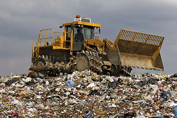
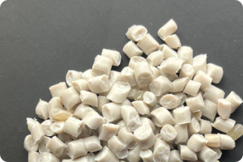
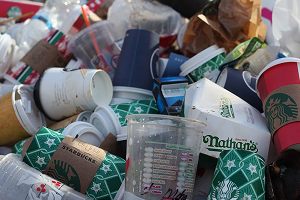
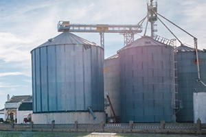
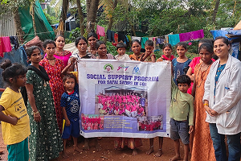

Services we offer

Extended Producer Responsibility (EPR)
Sampurn(e)arth takes pride in our commitment to Extended Producer
Responsibility (EPR) as one of the first PROs in India. We
collaborate with producers, brands and manufacturers to manage
the entire life cycle of their products responsibly. We are
present all over India and we offer transparent and diligent
reporting to our customers. By integrating EPR practices, we
contribute to sustainable resource management, ensuring that
products are recycled and disposed of responsibly.
CONTACT

Post Consumer Recyclate (PCR)
Post-consumer recyclates are materials that have been used by
consumers and then collected for recycling, turning what would
have been waste into valuable resources for new products. This
process not only conserves natural resources but also reduces
greenhouse gas emissions and energy consumption compared to
producing goods from virgin materials. By incorporating
post-consumer recyclates into manufacturing, businesses can
significantly lessen their environmental impact while supporting
a circular economy. With the new compliance rules for PCR coming
into effect, we work actively with brands and producers to meet
the same.
CONTACT

Dry Waste Management (DWM Services)
Sampurn(e)arth specializes in efficient dry waste management
solutions. We collect, segregate, and recycle dry waste,
ensuring minimal environmental impact. We run MRF facilities in
Goa and collection centers in Mumbai. Our decentralized network
of collectors partners can collect segregated waste from Bulk
Waste Generators in our present geographies. Our comprehensive
approach addresses various dry waste materials, contributing to
a cleaner, greener future aiming to end landfilling of our
post-consumer dry waste.
CONTACT

Biogas Solutions
Embrace sustainable energy with Sampurn(e)arth's Biogas Solutions.
We harness the power of organic waste to generate clean biogas,
contributing to renewable energy sources. Our tailored and
in-house design of our biogas solutions offer an eco-friendly
alternative for waste disposal while promoting energy
self-sufficiency.
CONTACT

Social Support Activities
We firmly acknowledge the work of the Safai Saathis in all
geographies where we are present, and have been working closely
with them since the beginning. We believe that as waste creates
livelihood for them, it needs to be dignified and sustainable
and our social support team ensures that we engage with all the
informal waste workers, organizing and formalizing them
throughout the supply chain.
CONTACT